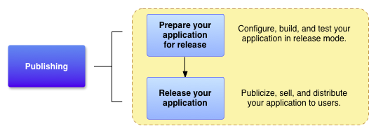

Quickview
- Learn which resources you'll need to release your app.
- Find out how to configure and build your app for release.
- Learn best practices for releasing your app.
In this document
- Introduction
- Gathering Materials and Resources
- Configuring Your Application
- Building Your Application
- Preparing External Servers and Resources
- Testing Your Application for Release
See also
Before you distribute your Android application to users you need to prepare it for release. The preparation process is a required development task for all Android applications and is the first step in the publishing process (see figure 1).
When you prepare your application for release, you configure, build, and test a release
version of your application. The configuration tasks are straightforward, involving basic code
cleanup and code modification tasks that help optimize your application. The build process is
similar to the debug build process and can be done using JDK and Android SDK tools. The testing
tasks serve as a final check, ensuring that your application performs as expected under real-world
conditions. When you are finished preparing your application for release you have a signed
.apk file, which you can distribute directly to users or distribute through an
application marketplace such as Google Play.
This document summarizes the main tasks you need to perform to prepare your application for release. The tasks that are described in this document apply to all Android applications regardless how they are released or distributed to users. If you are releasing your application through Google Play, you should also read Publishing Checklist for Google Play to be sure your release-ready application satisfies all Google Play requirements.
Note: As a best practice, your application should meet all of your release criteria for functionality, performance, and stability before you perform the tasks outlined in this document.
Figure 1. Preparing for release is a required development task and is the first step in the publishing process.
Introduction
To release your application to users you need to create a release-ready package that users can
install and run on their Android-powered devices. The release-ready package contains the same
components as the debug .apk file — compiled source code, resources, manifest
file, and so on — and it is built using the same build tools. However, unlike the debug
.apk file, the release-ready .apk file is signed with your own certificate
and it is optimized with the zipalign tool.
Figure 2. You perform five main tasks to prepare your application for release.
The signing and optimization tasks are usually seamless if you are building your application with Eclipse and the ADT plugin or with the Ant build script (included with the Android SDK). For example, you can use the Eclipse Export Wizard to compile, sign, and optimize your application all at once. You can also configure the Ant build script to do the same when you build from the command line.
To prepare your application for release you typically perform five main tasks (see figure 2). Each main task may include one or more smaller tasks depending on how you are releasing your application. For example, if you are releasing your application through Google Play you may want to add special filtering rules to your manifest while you are configuring your application for release. Similarly, to meet Google Play publishing guidelines you may have to prepare screenshots and create promotional text while you are gathering materials for release.
You usually perform the tasks listed in figure 2 after you have throroughly debugged and tested your application. The Android SDK contains several tools to help you test and debug your Android applications. For more information, see the Debugging and Testing sections in the Dev Guide.
Gathering Materials and Resources
To begin preparing your application for release you need to gather several supporting items. At a minimum this includes cryptographic keys for signing your application and an application icon. You might also want to include an end-user license agreement.
Cryptographic keys
The Android system requires that each installed application be digitally signed with a certificate that is owned by the application's developer (that is, a certificate for which the developer holds the private key). The Android system uses the certificate as a means of identifying the author of an application and establishing trust relationships between applications. The certificate that you use for signing does not need to be signed by a certificate authority; the Android system allows you to sign your applications with a self-signed certificate. To learn about certificate requirements, see Obtain a suitable private key.
Important: Your application must be signed with a cryptographic key whose validity period ends after 22 October 2033.
You may also have to obtain other release keys if your application accesses a service or uses a third-party library that requires you to use a key that is based on your private key. For example, if your application uses the MapView class, which is part of the Google Maps external library, you will need to register your application with the Google Maps service and obtain a Maps API key. For information about getting a Maps API key, see Obtaining a Maps API key.
Application Icon
Be sure you have an application icon and that it meets the recommended icon guidelines. Your application's icon helps users identify your application on a device's Home screen and in the Launcher window. It also appears in Manage Applications, My Downloads, and elsewhere. In addition, publishing services such as Google Play display your icon to users.
Note: If you are releasing your application on Google Play, you need to create a high resolution version of your icon. See Graphic Assets for your Application for more information.
End-user License Agreement
Consider preparing an End User License Agreement (EULA) for your application. A EULA can help protect your person, organization, and intellectual property, and we recommend that you provide one with your application.
Miscellaneous Materials
You might also have to prepare promotional and marketing materials to publicize your application. For example, if you are releasing your application on Google Play you will need to prepare some promotional text and you will need to create screenshots of your application. For more information, see Graphic Assets for your Application
Configuring Your Application for Release
After you gather all of your supporting materials you can start configuring your application for release. This section provides a summary of the configuration changes we recommend that you make to your source code, resource files, and application manifest prior to releasing your application. Although most of the configuration changes listed in this section are optional, they are considered good coding practices and we encourage you to implement them. In some cases, you may have already made these configuration changes as part of your development process.
Choose a good package name
Make sure you choose a package name that is suitable over the life of your application. You cannot change the package name after you distribute your application to users. You can set the package name in application's manifest file. For more information, see the package attribute documentation.
Turn off logging and debugging
Make sure you deactivate logging and disable the debugging option before you build your
application for release. You can deactivate logging by removing calls to
Log methods in your source files. You can disable debugging by removing the
android:debuggable attribute from the <application> tag in your
manifest file, or by setting the android:debuggable attribute to
false in your manifest file. Also, remove any log files or static test files that
were created in your project.
Also, you should remove all Debug tracing calls that you
added to your code, such as startMethodTracing() and
stopMethodTracing() method calls.
Clean up your project directories
Clean up your project and make sure it conforms to the directory structure described in Android Projects. Leaving stray or orphaned files in your project can prevent your application from compiling and cause your application to behave unpredictably. At a minimum you should do the following cleanup tasks:
- Review the contents of your
jni/,lib/, andsrc/directories. Thejni/directory should contain only source files associated with the Android NDK, such as.c,.cpp,.h, and.mkfiles. Thelib/directory should contain only third-party library files or private library files, including prebuilt shared and static libraries (for example,.sofiles). Thesrc/directory should contain only the source files for your application (.javaand.aidlfiles). Thesrc/directory should not contain any.jarfiles. - Check your project for private or proprietary data files that your application does not use
and remove them. For example, look in your project's
res/directory for old drawable files, layout files, and values files that you are no longer using and delete them. - Check your
lib/directory for test libraries and remove them if they are no longer being used by your application. - Review the contents of your
assets/directory and yourres/raw/directory for raw asset files and static files that you need to update or remove prior to release.
Review and update your manifest settings
Verify that the following manifest items are set correctly:
-
<uses-permission> element
You should specify only those permissions that are relevant and required for your application.
android:iconandandroid:labelattributesYou must specify values for these attributes, which are located in the <application> element.
android:versionCodeandandroid:versionNameattributes.We recommend that you specify values for these attributes, which are located in the <manifest> element. For more information see Versioning your Application.
There are several additional manifest elements that you can set if you are releasing your
application on Google Play. For example, the android:minSdkVersion and
android:targetSdkVersion attributes, which are located in the <uses-sdk> element. For more
information about these and other Google Play settings, see Filters on Google Play.
Address compatibility issues
Android provides several tools and techniques to make your application compatible with a wide range of devices. To make your application available to the largest number of users, consider doing the following:
- Add support for multiple screen configurations
Make sure you meet the best practices for supporting multiple screens. By supporting multiple screen configurations you can create an application that functions properly and looks good on any of the screen sizes supported by Android.
- Optimize your application for Android tablet devices.
If your application is designed for devices older than Android 3.0, make it compatible with Android 3.0 devices by following the guidelines and best practices described in Optimizing Apps for Android 3.0 .
- Consider using the Support Library
If your application is designed for devices running Android 3.x, make your application compatible with older versions of Android by adding the Support Library to your application project. The Support Library provides static support libraries that you can add to your Android application, which enables you to use APIs that are either not available on older platform versions or use utility APIs that are not part of the framework APIs.
Update URLs for servers and services
If your application accesses remote servers or services, make sure you are using the production URL or path for the server or service and not a test URL or path.
Implement Licensing (if you are releasing on Google Play)
If you are releasing a paid application through Google Play, consider adding support for Google Play Licensing. Licensing lets you control access to your application based on whether the current user has purchased it. Using Google Play Licensing is optional even if you are releasing your app through Google Play.
For more information about Google Play Licensing Service and how to use it in your application, see Application Licensing.
Building Your Application for Release
After you finish configuring your application you can build it into a release-ready
.apk fle that is signed and optimized. The JDK includes the tools for signing the
.apk file (Keytool and Jarsigner); the Android SDK includes the tools for compiling and
optimizing the .apk file. If you are using Eclipse with the ADT plugin or you are using
the Ant build script from the command line, you can automate the entire build process.
Building with Eclipse
You can use the Eclipse Export Wizard to build a release-ready .apk file that is
signed with your private key and optimized. To learn how to run the Export Wizard, see
Compile and sign with Eclipse
ADT. The Export Wizard compiles your application for release, signs your application with your
private key, and optimizes your application with the zipalign tool. The Export Wizard should run
successfully if you have run or debugged your application from Eclipse and you have no errors in
your application (see Building
and Running from Eclipse with ADT for more information.
The Export Wizard assumes that you have a certificate and private key suitable for signing your application. If you do not have a suitable certificate and private key, the Export Wizard will help you generate one (see Signing Your Applications for more information about the signing process and signing guidelines.
Building with Ant
You can use the Ant build script (included in the Android SDK) to build a release-ready
.apk file that is signed with your private key and optimized. To learn how to do this,
see Building in
Release Mode. This build method assumes you have a certificate and
private key suitable for signing your application. If you do not have a suitable certificate and
private key, the Export Wizard will help you generate one (see
Signing Your Applications for more
information about the signing process and signing guidelines.
Preparing External Servers and Resources
If your application relies on a remote server, make sure the server is secure and that it is configured for production use. This is particularly important if you are implementing in-app billing in your application and you are performing the signature verification step on a remote server.
Also, if your application fetches content from a remote server or a real-time service (such as a content feed), be sure the content you are providing is up to date and production-ready.
Testing Your Application for Release
Testing the release version of your application helps ensure that your application runs properly under realistic device and network conditions. Ideally, you should test your application on at least one handset-sized device and one tablet-sized device to verify that your user interface elements are sized correctly and that your application's performance and battery efficiency are acceptable.
As a starting point for testing, see What to Test. This article provides a summary of common Android situations that you should consider when you are testing. When you are done testing and you are satisfied that the release version of your application behaves correctly, you can release your application to users. For more information, see Releasing Your Application to Users. If you are publishing your application on Google Play, see Launch Checklist for Google Play.